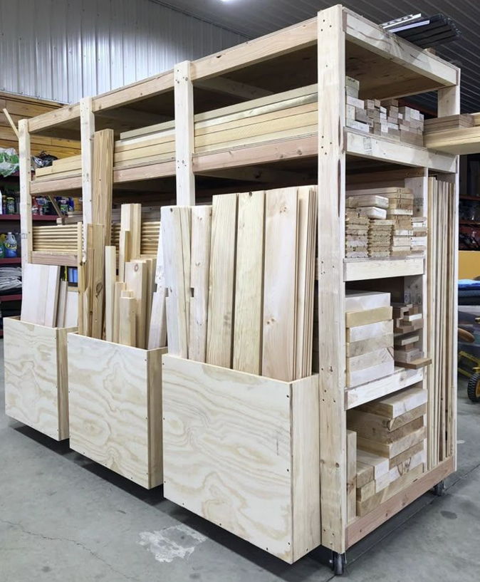

Le rangement pour le bois
Les développements liés à l’IA sont maintenant disponibles pour
soutenir les menuisiers et ébénistes. La conception de plan et
leur validation peuvent-être faits dans divers environnements.
Dans le cas présent, il s’agit de ChatGpt, lequel peut analyser
les informations en format Ruby et retourner ses commentaires
et une version amandée (en Ruby que l'on charge en dessin skp via la console ruby)
et le cas échéant un plan de coupe.
L’usage de l’IA permet de valider la conception et le plan de coupe.
Le rangement pour le bois se veut un premier essai de conception d’un
meuble assisté avec l’IA et nous fournissons le PDF du plan de coupe. Ce rangement requière une quantité importante de bois pour sa réalisation.

